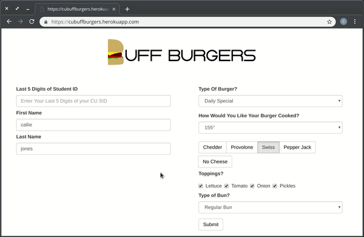
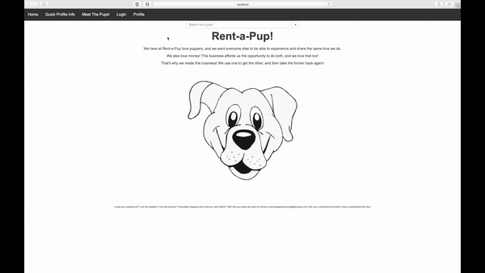

<!-- Banner -->
<section id="banner">
    <div class="inner">
        <h2>{{ site.title }}</h2>
        <p>{{ site.description | markdownify }}</p>
    </div>
    <a href="#one" class="more scrolly"></a>
</section>

<!-- One -->
<section id="one" class="wrapper style1 special">
    <div class="inner">
        <h2>Course Work</h2>
        <ul class="features">
            <li class="icon fa-laptop">
                <a href="CourseWork.html#machineLearning">
                <h3>Machine Learning</h3>
                </a>
            </li>
            <li class="icon fa-globe">
                <a href="CourseWork.html#networkSystems">
                <h3>Network Systems</h3>
                </a>
            </li>
        </ul>
        <h2>Projects</h2>
        <ul class="features">
            <li class="icon fa-cogs">
                <a href="Projects.html#smt">
                    <h3>Software Methods & Tools</h3>
                    <div class="image"></div>
                </a>
            </li>
            <li class="icon fa-object-group">
                <a href="Projects.html#ood">
                    <h3>Object-Oriented & Design</h3>
                    <div class="image"></div>
                </a>
            </li>
        </ul>
        <ul class="icons major">
            <li><span class="icon fa-linux major style1"><span class="label"></span></span></li>
            <li><a href="https://www.reddit.com/r/aww/" target="_blank"><span class="icon fa-paw major style2"><span class="label"></span></span></a></li>
            <li><span class="icon fa-terminal major style3"><span class="label"></span></span></li>
        </ul>
    </div>
</section>
